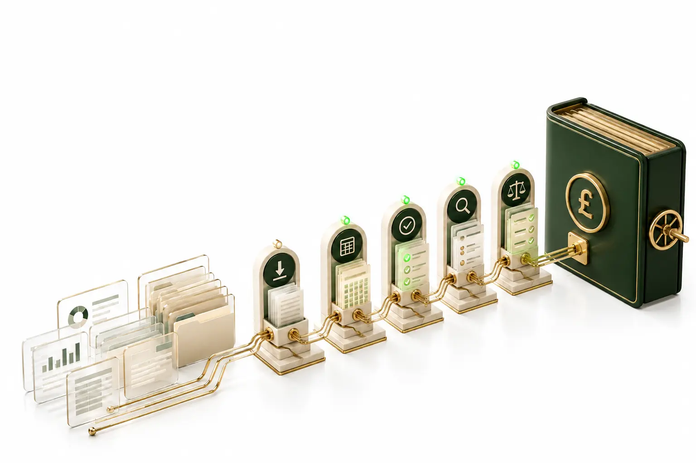

Import
Bring your payroll data into the migration process.Start with existing company, employee and payroll information from your current payroll environment or supported structured data source.
Move your existing payroll data into Oceans Pay through a structured migration process designed to help you map, validate and review information before your first live payroll.

Payroll migration is more than transferring employee names and opening balances.
Company settings, employee records, year-to-date figures, pay elements and payroll history all need to arrive in the right place and make sense when they get there.
Oceans Pay is designed to make that transition visible from start to finish.
Start with existing company, employee and payroll information from your current payroll environment or supported structured data source.
Match source fields and payroll information to the corresponding structure within Oceans Pay.
Identify missing information, inconsistencies and records that may require additional attention.
Give payroll teams visibility over anything requiring a decision rather than allowing questionable data to pass through unnoticed.
Review the resulting payroll information before moving into live processing.
Migration is an opportunity to understand the payroll data you are bringing with you.
Oceans Pay uses intelligent assistance and structured validation to help identify information that may warrant review during migration.
Employer and payroll configuration required to establish the payroll environment.
Core payroll and employment information for existing employees.
Relevant earnings, deductions and recurring payroll information.
Payroll figures required to maintain continuity when moving during the tax year.
Relevant employee payroll information required for continued processing.
Payroll data associated with workplace pension processing.
Relevant historical information supported by the migration route.
Exact data availability depends on the source system and migration method.
A payroll move does not always happen neatly at the start of a tax year.
Oceans Pay is designed around structured migration and reconciliation so organisations can plan the transition around their payroll operation rather than treating migration as a simple one-time import.
For mid-year moves, particular attention can be given to the payroll information needed to maintain continuity between the previous system and Oceans Pay.
A bureau migration may involve many employers, payrolls and different configurations.
Oceans Pay provides a structured approach for moving payroll information while keeping individual companies and migration progress visible.
Bring your organisation's existing payroll information across through a process designed around continuity, review and control.
The objective is to reach your first Oceans Pay payroll with confidence in the information that has been brought across.
A controlled transition allows teams to review the migrated position, resolve outstanding exceptions and confirm readiness before live payroll begins.
Data brought into Oceans Pay.
Required checks completed.
Exceptions addressed.
Migrated payroll position confirmed.
Prepared for live processing.
Tell us what you currently use, how many payrolls you manage and when you are considering switching.
We'll show you the migration approach relevant to your payroll environment.